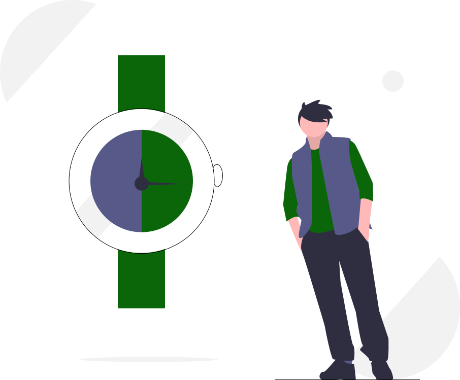
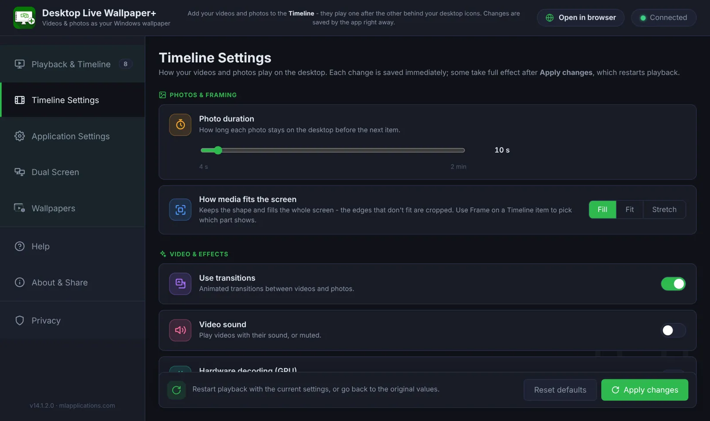
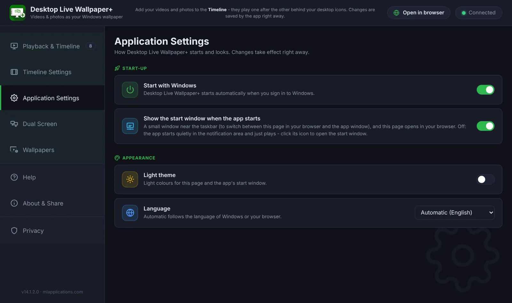
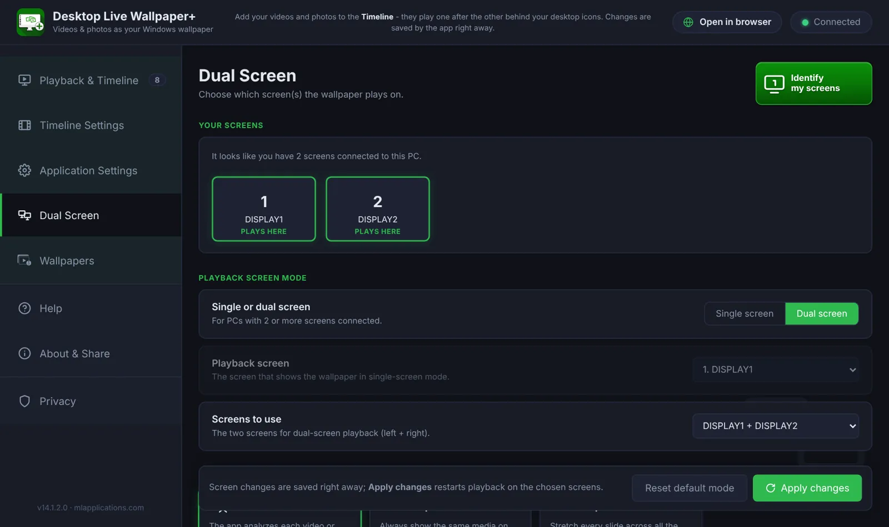

Desktop Live Wallpaper+ settings
Here you will read about the options you have to fully control Desktop Live Wallpaper+. The app is built to be as simple as possible, but it has some advanced settings for you to choose.

Settings overview: Timeline control and app behavior
The settings are in the menu on the left of the controls (in the app window or in your browser), on three pages:
Timeline Settings
How your videos and photos play: photo duration, how media fits the screen, transitions, video sound and GPU decoding.
Application Settings
How the app starts with Windows, the start window, light or dark theme and the language.
Dual Screen
Which screen plays the wallpaper, or both – and how your media uses two screens.
Every change is saved immediately. Some take full effect after Apply changes, which restarts playback with the new settings. Reset defaults brings back the original values.
1Timeline Settings

Photo duration
Choose how long each photo stays on the desktop before the next item – from 4 seconds to 2 minutes (default: 10 seconds). The general rule the app follows: each photo is displayed for the seconds you choose. Each animated GIF plays once, for as long as the GIF lasts. Each video plays once (muted by default – you can change it): if it lasts two minutes, the next item of the Timeline starts after it ends.
How media fits the screen
Fill keeps the shape and fills the whole screen – the edges that don't fit are cropped. Fit shows the whole picture, with black bars where it doesn't fill the screen. Stretch fills the screen by stretching the picture. With Frame on a Timeline card, you choose exactly which part of a tall photo or a wide video fills your desktop.
Use transitions
When on, the app plays a cinematic transition between every two items of the Timeline – circle reveals, radial wipes, slides, pixel dissolves, zooms, blurs and fades, with slow pan and zoom movement. Default: On.
Video sound
When on, the videos of the Timeline play with their sound. The default is Off, so that the sound of your desktop videos doesn't mix with any other app you open (for example YouTube in a browser).
Hardware decoding (GPU)
Lets the graphics card decode the videos – usually smoother and lighter on the CPU, especially for 4K. Default: On.
2Application Settings

Start with Windows
As we described on the Usage page, Desktop Live Wallpaper+ can start automatically. The default value is On: after each Windows sign-in the app starts and plays your Timeline on the desktop, without the need to start it manually. If you prefer to start the app only when you want to, set it to Off.
Show the start window when the app starts
When on, a small window appears near the taskbar when the app starts, where you choose the app window or your browser for the controls. When off, the app starts quietly in the notification area and just plays – click its icon to open the start window. This doesn't affect playback: the wallpaper always plays.
Light theme and language
Choose light or dark colours for the controls and the start window. The language follows Windows (or your browser) automatically – 16 languages are available – or you can pick one yourself.
3Dual Screen

With two monitors you can play the wallpaper on the screen you choose, or on both. For two screens, pick the pair (for example DISPLAY2 + DISPLAY1 – left to right) and how each item uses them:
- Repeat – the same media on every screen.
- Expand – every item stretched across all the screens, as one big picture.
- AI-mode – the app analyzes each video or photo and picks the best way: repeated or expanded.
Not sure which screen is which? Click Identify – each screen shows its number for a moment.